Unit 7
The p-Block Elements
The p-Block Elements

Objectives
After studying this Unit, you will be able to
• appreciate general trends in the chemistry of elements of groups 15,16,17 and 18;
• learn the preparation, properties and uses of dinitrogen and phosphorus and some of their important compounds;
• describe the preparation, properties and uses of dioxygen and ozone and chemistry of some simple oxides;
• know allotropic forms of sulphur, chemistry of its important compounds and the structures of its oxoacids;
• describe the preparation, properties and uses of chlorine and hydrochloric acid;
• know the chemistry of interhalogens and structures of oxoacids of halogens;
• enumerate the uses of noble gases;
• appreciate the importance of these elements and their compounds in our day to day life.
Diversity in chemistry is the hallmark of p–block elements manifested in their ability to react with the elements of s–, d– and f–blocks as well as with their own.
In Class XI, you have learnt that the p-block elements are placed in groups 13 to 18 of the periodic table. Their valence shell electronic configuration is ns2np1–6 (except He which has 1s2 configuration). The properties of p-block elements like that of others are greatly influenced by atomic sizes, ionisation enthalpy, electron gain enthalpy and electronegativity. The absence of d-orbitals in second period and presence of d or d and f orbitals in heavier elements (starting from third period onwards) have significant effects on the properties of elements. In addition, the presence of all the three types of elements; metals, metalloids and non-metals bring diversification in chemistry of these elements.
Having learnt the chemistry of elements of Groups 13 and 14 of the p-block of periodic table in Class XI, you will learn the chemistry of the elements of subsequent groups in this Unit.
7.1 Group 15 Elements
Group 15 includes nitrogen, phosphorus, arsenic, antimony and bismuth. As we go down the group, there is a shift from non-metallic to metallic through metalloidic character. Nitrogen and phosphorus are non-metals, arsenic and antimony metalloids and bismuth is a typical metal.
7.1.1 Occurrence
Molecular nitrogen comprises 78% by volume of the atmosphere. In the earth’s crust, it occurs as sodium nitrate, NaNO3 (called Chile saltpetre) and potassium nitrate (Indian saltpetre). It is found in the form of proteins in plants and animals. Phosphorus occurs in minerals of the apatite family, Ca9(PO4)6. CaX2 (X = F, Cl or OH) (e.g., fluorapatite Ca9 (PO4)6. CaF2) which are the main components of phosphate rocks. Phosphorus is an essential constituent of animal and plant matter. It is present in bones as well as in living cells. Phosphoproteins are present in milk and eggs. Arsenic, antimony and bismuth are found mainly as sulphide minerals.
The important atomic and physical properties of this group elements along with their electronic configurations are given in Table 7.1.
Table 7.1: Atomic and Physical Properties of Group 15 Elements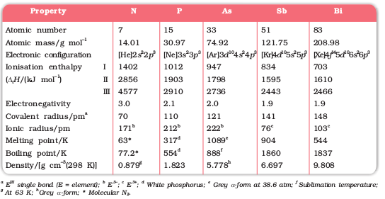
Trends of some of the atomic, physical and chemical properties of the group are discussed below.
7.1.2 Electronic Configuration
The valence shell electronic configuration of these elements is ns2np3. The s orbital in these elements is completely filled and p orbitals are half-filled, making their electronic configuration extra stable.
7.1.3 Atomic and Ionic Radii
Covalent and ionic (in a particular state) radii increase in size down the group. There is a considerable increase in covalent radius from N to P. However, from As to Bi only a small increase in covalent radius is observed. This is due to the presence of completely filled d and/or f orbitals in heavier members.
7.1.4 Ionisation Enthalpy
Ionisation enthalpy decreases down the group due to gradual increase in atomic size. Because of the extra stable half-filled p orbitals electronic configuration and smaller size, the ionisation enthalpy of the group 15 elements is much greater than that of group 14 elements in the corresponding periods. The order of successive ionisation enthalpies, as expected is ∆iH1 < ∆iH2 < ∆iH3 (Table 7.1).
7.1.5 Electronegativity
The electronegativity value, in general, decreases down the group with increasing atomic size. However, amongst the heavier elements, the difference is not that much pronounced.
7.1.6 Physical Properties
All the elements of this group are polyatomic. Dinitrogen is a diatomic gas while all others are solids. Metallic character increases down the group. Nitrogen and phosphorus are non-metals, arsenic and antimony metalloids and bismuth is a metal. This is due to decrease in ionisation enthalpy and increase in atomic size. The boiling points, in general, increase from top to bottom in the group but the melting point increases upto arsenic and then decreases upto bismuth. Except nitrogen, all the elements show allotropy.
7.1.7 Chemical Properties
Oxidation states and trends in chemical reactivity
The common oxidation states of these elements are –3, +3 and +5.
The tendency to exhibit –3 oxidation state decreases down the group due to increase in size and metallic character. In fact last member of the group, bismuth hardly forms any compound in –3 oxidation state. The stability of +5 oxidation state decreases down the group. The only well characterised Bi (V) compound is BiF5. The stability of +5 oxidation state decreases and that of +3 state increases (due to inert pair effect) down the group. Nitrogen exhibits + 1, + 2, + 4 oxidation states also when it reacts with oxygen. Phosphorus also shows +1 and +4 oxidation states in some oxoacids.
In the case of nitrogen, all oxidation states from +1 to +4 tend to disproportionate in acid solution. For example,
3HNO2 → HNO3 + H2O + 2NO
Similarly, in case of phosphorus nearly all intermediate oxidation states disproportionate into +5 and –3 both in alkali and acid. However +3 oxidation state in case of arsenic, antimony and bismuth becomes increasingly stable with respect to disproportionation.
Nitrogen is restricted to a maximum covalency of 4 since only four (one s and three p) orbitals are available for bonding. The heavier elements have vacant d orbitals in the outermost shell which can be used for bonding (covalency) and hence, expand their covalence as in PF–6.
Anomalous properties of nitrogen
Nitrogen differs from the rest of the members of this group due to its small size, high electronegativity, high ionisation enthalpy and non-availability of d orbitals. Nitrogen has unique ability to form pπ-pπ multiple bonds with itself and with other elements having small size and high electronegativity (e.g., C, O). Heavier elements of this group do not form pπ-pπ bonds as their atomic orbitals are so large and diffuse that they cannot have effective overlapping. Thus, nitrogen exists as a diatomic molecule with a triple bond (one s and two p) between the two atoms. Consequently, its bond enthalpy (941.4 kJ mol–1) is very high. On the contrary, phosphorus, arsenic and antimony form single bonds as P–P, As–As and Sb–Sb while bismuth forms metallic bonds in elemental state. However, the single N–N bond is weaker than the single P–P bond because of high interelectronic repulsion of the non-bonding electrons, owing to the small bond length. As a result the catenation tendency is weaker in nitrogen. Another factor which affects the chemistry of nitrogen is the absence of d orbitals in its valence shell. Besides restricting its covalency to four, nitrogen cannot form dπ–pπ bond as the heavier elements can e.g., R3P = O or R3P = CH2 (R = alkyl group). Phosphorus and arsenic can form dπ–dπ bond also with transition metals when their compounds like P(C2H5)3 and As(C6H5)3 act as ligands.
(i) Reactivity towards hydrogen: All the elements of Group 15 form hydrides of the type EH3 where E = N, P, As, Sb or Bi. Some of the properties of these hydrides are shown in Table 7.2. The hydrides show regular gradation in their properties. The stability of hydrides decreases from NH3 to BiH3 which can be observed from their bond dissociation enthalpy. Consequently, the reducing character of the hydrides increases. Ammonia is only a mild reducing agent while BiH3 is the strongest reducing agent amongst all the hydrides. Basicity also decreases in the order NH3 > PH3 > AsH3 > SbH3 > BiH3.
Table 7.2: Properties of Hydrides of Group 15 Elements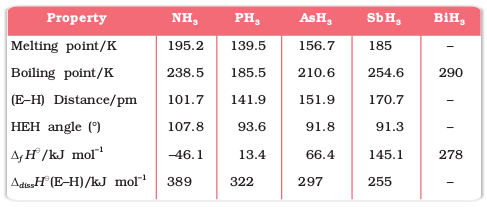
(ii) Reactivity towards oxygen: All these elements form two types of oxides: E2O3 and E2O5. The oxide in the higher oxidation state of the element is more acidic than that of lower oxidation state. Their acidic character decreases down the group. The oxides of the type E2O3 of nitrogen and phosphorus are purely acidic, that of arsenic and antimony amphoteric and those of bismuth predominantly basic.
(iii) Reactivity towards halogens: These elements react to form two series of halides: EX3 and EX5. Nitrogen does not form pentahalide due to non-availability of the d orbitals in its valence shell. Pentahalides are more covalent than trihalides. All the trihalides of these elements except those of nitrogen are stable. In case of nitrogen, only NF3 is known to be stable. Trihalides except BiF3 are predominantly covalent in nature.
(iv) Reactivity towards metals: All these elements react with metals to form their binary compounds exhibiting –3 oxidation state, such as, Ca3N2 (calcium nitride) Ca3P2 (calcium phosphide), Na3As2 (sodium arsenide), Zn3Sb2 (zinc antimonide) and Mg3Bi2 (magnesium bismuthide).
Example 7.1
Though nitrogen exhibits +5 oxidation state, it does not form pentahalide. Give reason.
Solution
Nitrogen with n = 2, has s and p orbitals only. It does not have d orbitals to expand its covalence beyond four. That is why it does not form pentahalide
Example 7.2
PH3 has lower boiling point than NH3. Why?
Solution
Unlike NH3, PH3 molecules are not associated through hydrogen bonding in liquid state. That is why the boiling point of PH3 is lower than NH3.
Intext Questions
7.1 Why are pentahalides more covalent than trihalides ?
7.2 Why is BiH3 the strongest reducing agent amongst all the hydrides of Group 15 elements ?
7.2 Dinitrogen
Preparation
Dinitrogen is produced commercially by the liquefaction and fractional distillation of air. Liquid dinitrogen (b.p. 77.2 K) distils out first leaving behind liquid oxygen (b.p. 90 K).
In the laboratory, dinitrogen is prepared by treating an aqueous solution of ammonium chloride with sodium nitrite.
NH4CI(aq) + NaNO2(aq)  N2(g) + 2H2O(l) + NaCl (aq)
N2(g) + 2H2O(l) + NaCl (aq)
Small amounts of NO and HNO3 are also formed in this reaction; these impurities can be removed by passing the gas through aqueous sulphuric acid containing potassium dichromate. It can also be obtained by the thermal decomposition of ammonium dichromate.
(NH4)2Cr2O7  N2 + 4H2O + Cr2O3
N2 + 4H2O + Cr2O3
Very pure nitrogen can be obtained by the thermal decomposition of sodium or barium azide.
Ba(N3)2 Ba + 3N2
Properties
Dinitrogen is a colourless, odourless, tasteless and non-toxic gas. Nitrogen atom has two stable isotopes: 14N and 15N. It has a very low solubility in water (23.2 cm3 per litre of water at 273 K and 1 bar pressure) and low freezing and boiling points (Table 7.1).
Dinitrogen is rather inert at room temperature because of the high bond enthalpy of N= N bond. Reactivity, however, increases rapidly with rise in temperature. At higher temperatures, it directly combines with some metals to form predominantly ionic nitrides and with non-metals, covalent nitrides. A few typical reactions are:
6Li + N2  2Li3N
2Li3N
3Mg + N2 Mg3N2
It combines with hydrogen at about 773 K in the presence of a catalyst (Haber’s Process) to form ammonia:
N2(g) + 3H2(g) 2NH3(g); ∆fH0 = –46.1 kJmol–1
Dinitrogen combines with dioxygen only at very high temperature (at about 2000 K) to form nitric oxide, NO.
N2 + O2(g) 2NO(g)
Uses: The main use of dinitrogen is in the manufacture of ammonia and other industrial chemicals containing nitrogen, (e.g., calcium cyanamide). It also finds use where an inert atmosphere is required (e.g., in iron and steel industry, inert diluent for reactive chemicals). Liquid dinitrogen is used as a refrigerant to preserve biological materials, food items and in cryosurgery
Example 7.3
Write the reaction of thermal decomposition of sodium azide.
Solution
Thermal decomposition of sodium azide gives dinitrogen gas. 2NaN3 2Na + 3N2
Intext Question
7.3 Why is N2 less reactive at room temperature?
7.3 Ammonia
Preparation
Ammonia is present in small quantities in air and soil where it is formed by the decay of nitrogenous organic matter e.g., urea.
On a small scale ammonia is obtained from ammonium salts which decompose when treated with caustic soda or calcium hydroxide.
2NH4Cl + Ca(OH)2 → 2NH3 + 2H2O + CaCl2
(NH4)2 SO4 + 2NaOH → 2NH3 + 2H2O + Na2SO4
On a large scale, ammonia is manufactured by Haber’s process.
N2(g) + 3H2(g)  2NH3(g); ∆f H
2NH3(g); ∆f Ho = – 46.1 kJ mol–1
In accordance with Le Chatelier’s principle, high pressure would favour the formation of ammonia. The optimum conditions for the production of ammonia are a pressure of 200 × 105 Pa (about 200 atm), a temperature of ~ 700 K and the use of a catalyst such as iron oxide with small amounts of K2O and Al2O3 to increase the rate of attainment of equilibrium. The flow chart for the production of ammonia is shown in Fig. 7.1. Earlier, iron was used as a catalyst with molybdenum as a promoter.
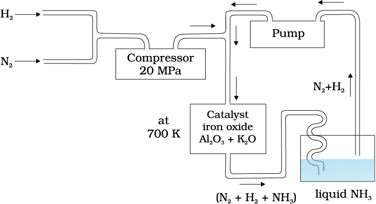
Fig. 7.1 Flow chart for the manufacture of ammonia
Properties
Ammonia is a colourless gas with a pungent odour. Its freezing and boiling points are 198.4 and 239.7 K respectively. In the solid and liquid states, it is associated through hydrogen bonds as in the case of water and that accounts for its higher melting and boiling points than expected on the basis of its molecular mass. The ammonia molecule is trigonal pyramidal with the nitrogen atom at the apex. It has three bond pairs and one lone pair of electrons as shown in the structure.
Ammonia gas is highly soluble in water. Its aqueous solution is weakly basic due to the formation of OH– ions.
NH3(g) + H2O(l) NH4+ (aq) + OH– (aq)
It forms ammonium salts with acids, e.g., NH4Cl, (NH4)2 SO4, etc. As a weak base, it precipitates the hydroxides (hydrated oxides in case of some metals) of many metals from their salt solutions. For example,
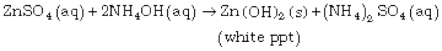
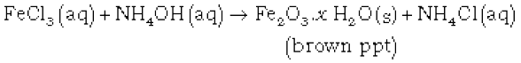
The presence of a lone pair of electrons on the nitrogen atom of the ammonia molecule makes it a Lewis base. It donates the electron pair and forms linkage with metal ions and the formation of such complex compounds finds applications in detection of metal ions such as Cu2+, Ag+:
Cu2+ (aq) + 4 NH3(aq) [Cu(NH3)4]2+(aq)
(blue) (deep blue)
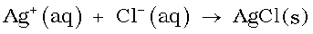
(colourless) (white ppt)
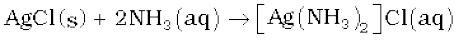
(white ppt) (colourless)
Uses: Ammonia is used to produce various nitrogenous fertilisers (ammonium nitrate, urea, ammonium phosphate and ammonium sulphate) and in the manufacture of some inorganic nitrogen compounds, the most important one being nitric acid. Liquid ammonia is also used as a refrigerant.
Example 7.4
Why does NH3 act as a Lewis base ?
Solution
Nitrogen atom in NH3 has one lone pair of electrons which is available for donation. Therefore, it acts as a Lewis base.
Intext Questions
7.4 Mention the conditions required to maximise the yield of ammonia.
7.5 How does ammonia react with a solution of Cu2+?
7.4 Oxides of Nitrogen
Nitrogen forms a number of oxides in different oxidation states. The names, formulas, preparation and physical appearance of these oxides are given in Table 7.3.
Table 7.3: Oxides of Nitrogen
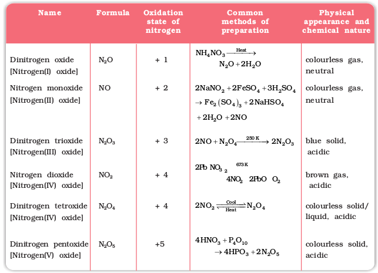
Lewis dot main resonance structures and bond parameters of oxides are given in Table 7.4.
Table 7.4: Structures of Oxides of Nitrogen
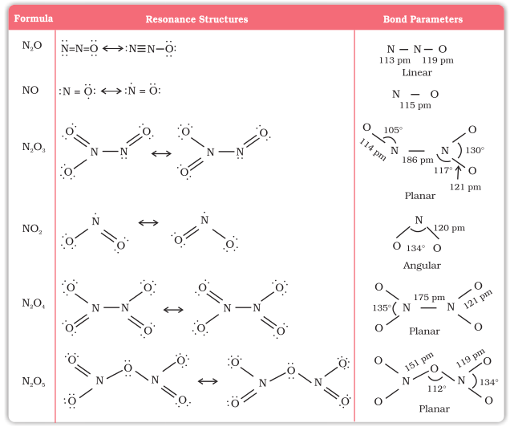
Example 7.5
Why does NO2 dimerise ?
Solution
NO2 contains odd number of valence electrons. It behaves as a typical odd molecule. On dimerisation, it is converted to stable N2O4 molecule with even number of electrons
Intext Question
7.6 What is the covalence of nitrogen in N2O5 ?
7.5 Nitric Acid
Nitrogen forms oxoacids such as H2N2O2 (hyponitrous acid), HNO2 (nitrous acid) and HNO3 (nitric acid). Amongst them HNO3 is the most important.
Preparation
In the laboratory, nitric acid is prepared by heating KNO3 or NaNO3 and concentrated H2SO4 in a glass retort.
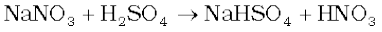
On a large scale it is prepared mainly by Ostwald’s process. This method is based upon catalytic oxidation of NH3 by atmospheric oxygen.
Nitric oxide thus formed combines with oxygen giving NO2.
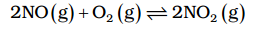
Nitrogen dioxide so formed, dissolves in water to give HNO3.
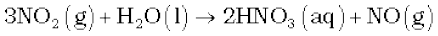
NO thus formed is recycled and the aqueous HNO3 can be concentrated by distillation upto ~ 68% by mass. Further concentration to 98% can be achieved by dehydration with concentrated H2SO4.
Properties

It is a colourless liquid (f.p. 231.4 K and b.p. 355.6 K). Laboratory grade nitric acid contains ~ 68% of the HNO3 by mass and has a specific gravity of 1.504.
In the gaseous state, HNO3 exists as a planar molecule with the structure as shown.
In aqueous solution, nitric acid behaves as a strong acid giving hydronium and nitrate ions.
HNO3(aq) + H2O(l) → H3O+(aq) + NO3– (aq)
Concentrated nitric acid is a strong oxidising agent and attacks most metals except noble metals such as gold and platinum. The products of oxidation depend upon the concentration of the acid, temperature and the nature of the material undergoing oxidation.
3Cu + 8 HNO3(dilute) → 3Cu(NO3)2 + 2NO + 4H2O
Cu + 4HNO3(conc.) → Cu(NO3)2 + 2NO2 + 2H2O
Zinc reacts with dilute nitric acid to give N2O and with concentrated acid to give NO2.
4Zn + 10HNO3(dilute) → 4 Zn (NO3)2 + 5H2O + N2O
Zn + 4HNO3(conc.) → Zn (NO3)2 + 2H2O + 2NO2
Some metals (e.g., Cr, Al) do not dissolve in concentrated nitric acid because of the formation of a passive film of oxide on the surface.
Concentrated nitric acid also oxidises non–metals and their compounds. Iodine is oxidised to iodic acid, carbon to carbon dioxide, sulphur to H2SO4, and phosphorus to phosphoric acid.
I2 + 10HNO3 → 2HIO3 + 10NO2 + 4H2O
C + 4HNO3 → CO2 + 2H2O + 4NO2
S8 + 48HNO3 → 8H2SO4 + 48NO2 + 16H2O
P4 + 20HNO3 → 4H3PO4 + 20NO2 + 4H2O
Brown Ring Test: The familiar brown ring test for nitrates depends on the ability of Fe2+ to reduce nitrates to nitric oxide, which reacts with Fe2+ to form a brown coloured complex. The test is usually carried out by adding dilute ferrous sulphate solution to an aqueous solution containing nitrate ion, and then carefully adding concentrated sulphuric acid along the sides of the test tube. A brown ring at the interface between the solution and sulphuric acid layers indicates the presence of nitrate ion in solution.
NO3- + 3Fe2+ + 4H+ → NO + 3Fe3+ + 2H2O
[Fe(H2O6)]2+ + NO → [Fe (H2O)5 (NO)]2+ + H2O
(brown)
Uses: The major use of nitric acid is in the manufacture of ammonium nitrate for fertilisers and other nitrates for use in explosives and pyrotechnics. It is also used for the preparation of nitroglycerin, trinitrotoluene and other organic nitro compounds. Other major uses are in the pickling of stainless steel, etching of metals and as an oxidiser in rocket fuels.
7.6 Phosphorus — Allotropic Forms
Phosphorus is found in many allotropic forms, the important ones being white, red and black.
White phosphorus is a translucent white waxy solid. It is poisonous, insoluble in water but soluble in carbon disulphide and glows in dark (chemiluminescence). It dissolves in boiling NaOH solution in an inert atmosphere giving PH3.
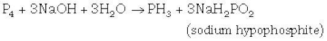
White phosphorus is less stable and therefore, more reactive than the other solid phases under normal conditions because of angular strain in the P4 molecule where the angles are only 60°. It readily catches fire in air to give dense white fumes of P4O10.
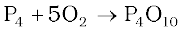
It consists of discrete tetrahedral P4 molecule as shown in Fig. 7.2.
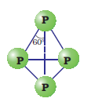
Fig. 7.2 White phosphorus
Red phosphorus is obtained by heating white phosphorus at 573K in an inert atmosphere for several days. When red phosphorus is heated under high pressure, a series of phases of black phosphorus is formed. Red phosphorus possesses iron grey lustre. It is odourless, non-poisonous and insoluble in water as well as in carbon disulphide. Chemically, red phosphorus is much less reactive than white phosphorus. It does not glow in the dark.
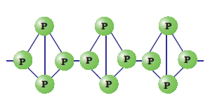
Fig.7.3: Red phosphorus
It is polymeric, consisting of chains of P4 tetrahedra linked together in the manner as shown in Fig. 7.3.
Black phosphorus has two forms α-black phosphorus and β-black phosphorus. α-Black phosphorus is formed when red phosphorus is heated in a sealed tube at 803K. It can be sublimed in air and has opaque monoclinic or rhombohedral crystals. It does not oxidise in air. β-Black phosphorus is prepared by heating white phosphorus at 473 K under high pressure. It does not burn in air upto 673 K.
7.7 Phosphine
Preparation
Phosphine is prepared by the reaction of calcium phosphide with water or dilute HCl.
Ca3P2 + 6H2O → 3Ca(OH)2 + 2PH3
Ca3P2 + 6HCl → 3CaCl2 + 2PH3
In the laboratory, it is prepared by heating white phosphorus with concentrated NaOH solution in an inert atmosphere of CO2.
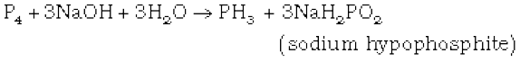
When pure, it is non inflammable but becomes inflammable owing to the presence of P2H4 or P4 vapours. To purify it from the impurities, it is absorbed in HI to form phosphonium iodide (PH4I) which on treating with KOH gives off phosphine.
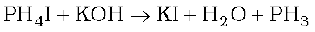
Properties
It is a colourless gas with rotten fish smell and is highly poisonous. It explodes in contact with traces of oxidising agents like HNO3, Cl2 and Br2 vapours.
It is slightly soluble in water. The solution of PH3 in water decomposes in presence of light giving red phosphorus and H2. When absorbed in copper sulphate or mercuric chloride solution, the corresponding phosphides are obtained.
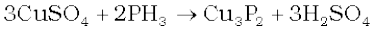
Phosphine is weakly basic and like ammonia, gives phosphonium compounds with acids e.g.,
Uses: The spontaneous combustion of phosphine is technically used in Holme's signals. Containers containing calcium carbide and calcium phosphide are pierced and thrown in the sea when the gases evolved burn and serve as a signal. It is also used in smoke screens.
Example 7.6
In what way can it be proved that PH3 is basic in nature?
Solution
PH3 reacts with acids like HI to form PH4I which shows that it is basic in nature.
PH3 + HI → PH 4I
Due to lone pair on phosphorus atom, PH3 is acting as a Lewis base in the above reaction
Intext Questions
7.7 Bond angle in PH4 + is higher than that in PH3. Why?
7.8 What happens when white phosphorus is heated with concentrated NaOH solution in an inert atmosphere of CO2 ?
7.8 Phosphorus Halides
Phosphorus forms two types of halides, PX3 (X = F, Cl, Br, I) and PX5 (X = F, Cl, Br).
7.8.1 Phosphorus Trichloride
Preparation
It is obtained by passing dry chlorine over heated white phosphorus.
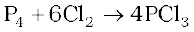
It is also obtained by the action of thionyl chloride with white phosphorus.
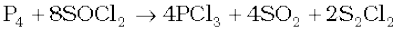
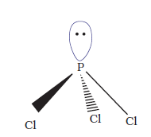
Properties
It is a colourless oily liquid and hydrolyses in the presence of moisture.
It reacts with organic compounds containing –OH group such as CH3COOH, C2H5OH.
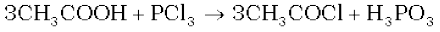
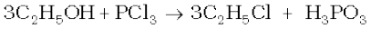
It has a pyramidal shape as shown, in which phosphorus is sp3 hybridised.
7.8.2 Phosphorus Pentachloride
Preparation
Phosphorus pentachloride is prepared by the reaction of white phosphorus with excess of dry chlorine.
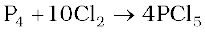
It can also be prepared by the action of SO2Cl2 on phosphorus.
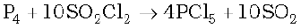
Properties
PCl5 is a yellowish white powder and in moist air, it hydrolyses to POCl3 and finally gets converted to phosphoric acid.
When heated, it sublimes but decomposes on stronger heating.
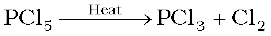
It reacts with organic compounds containing –OH group converting them to chloro derivatives.
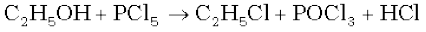
Finely divided metals on heating with PCl5 give corresponding chlorides.
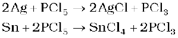
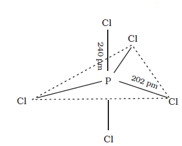
It is used in the synthesis of some organic compounds, e.g., C2H5Cl, CH3COCl.
In gaseous and liquid phases, it has a trigonal bipyramidal structure as shown. The three equatorial P–Cl bonds are equivalent, while the two axial bonds are longer than equatorial bonds. This is due to the fact that the axial bond pairs suffer more repulsion as compared to equatorial bond pairs.
In the solid state it exists as an ionic solid, [PCl4]+[PCl6]– in which the cation, [PCl4]+ is tetrahedral and the anion, [PCl6]–octahedral.
Example 7.7
Why does PCl3 fume in moisture ?
Solution
PCl3 hydrolyses in the presence of moisture giving fumes of HCl. PCl3 +3H2O→ H3PO3 +3HCl
Example 7.8
Are all the five bonds in PCl5 molecule equivalent? Justify your answer.
Solution
PCl5 has a trigonal bipyramidal structure and the three equatorial P-Cl bonds are equivalent, while the two axial bonds are different and longer than equatorial bonds.
Intext Questions
7.9 What happens when PCl5 is heated?
7.10 Write a balanced equation for the hydrolytic reaction of PCl5 in heavy water.
7.9 Oxoacids of Phosphorus
Phosphorus forms a number of oxoacids. The important oxoacids of phosphorus with their formulas, methods of preparation and the presence of some characteristic bonds in their structures are given in Table 7.5.
Table 7.5: Oxoacids of Phosphorus
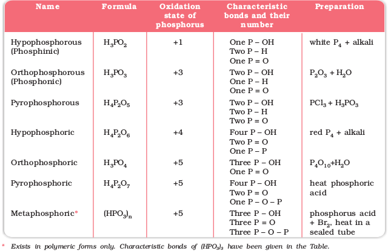
The compositions of the oxoacids are interrelated in terms of loss or gain of H2O molecule or O-atom.
The structures of some important oxoacids are given below:
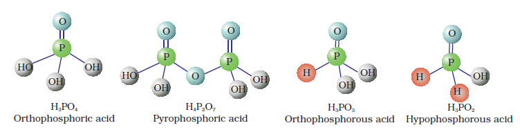
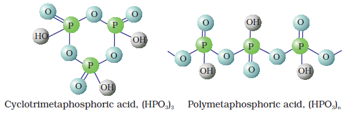
Fig. 7.4 Structures of some important oxoacids of phosphorus
In oxoacids phosphorus is tetrahedrally surrounded by other atoms. All these acids contain at least one P=O bond and one P–OH bond. The oxoacids in which phosphorus has lower oxidation state (less than +5) contain, in addition to P=O and P–OH bonds, either P–P (e.g., in H4P2O6) or P–H (e.g., in H3PO2) bonds but not both. These acids in +3 oxidation state of phosphorus tend to disproportionate to higher and lower oxidation states. For example, orthophophorous acid (or phosphorous acid) on heating disproportionates to give orthophosphoric acid (or phosphoric acid) and phosphine.
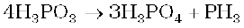
The acids which contain P–H bond have strong reducing properties. Thus, hypophosphorous acid is a good reducing agent as it contains two P–H bonds and reduces, for example, AgNO3 to metallic silver.
4 AgNO3 + 2H2O + H3PO2 → 4Ag + 4HNO3 + H3PO4
These P–H bonds are not ionisable to give H+ and do not play any role in basicity. Only those H atoms which are attached with oxygen in P–OH form are ionisable and cause the basicity. Thus, H3PO3 and H3PO4 are dibasic and tribasic, respectively as the structure of H3PO3 has two P–OH bonds and H3PO4 three.
Example 7.9
How do you account for the reducing behaviour of H3PO2 on the basis of its structure ?
Solution
In H3PO2, two H atoms are bonded directly to P atom which imparts reducing character to the acid.
Intext Questions
7.11 What is the basicity of H3PO4?
7.12 What happens when H3PO3 is heated?
7.10 Group 16 Elements
Oxygen, sulphur, selenium, tellurium and polonium constitute Group 16 of the periodic table. This is sometimes known as group of chalcogens. The name is derived from the Greek word for brass and points to the association of sulphur and its congeners with copper. Most copper minerals contain either oxygen or sulphur and frequently the other members of the group.
7.10.1 Occurrence
Oxygen is the most abundant of all the elements on earth. Oxygen forms about 46.6% by mass of earth’s crust. Dry air contains 20.946% oxygen by volume.
However, the abundance of sulphur in the earth’s crust is only 0.03-0.1%. Combined sulphur exists primarily as sulphates such as gypsum CaSO4.2H2O, epsom salt MgSO4.7H2O, baryte BaSO4 and sulphides such as galena PbS, zinc blende ZnS, copper pyrites CuFes2. Traces of sulphur occur as hydrogen sulphide in volcanoes. Organic materials such as eggs, proteins, garlic, onion, mustard, hair and wool contain sulphur.
Selenium and tellurium are also found as metal selenides and tellurides in sulphide ores. Polonium occurs in nature as a decay product of thorium and uranium minerals.
The important atomic and physical properties of Group16 along with electronic configuration are given in Table 7.6. Some of the atomic, physical and chemical properties and their trends are discussed below.
7.10.2 Electronic Configuration
The elements of Group16 have six electrons in the outermost shell and have ns2nP4 general electronic configuration.
7.10.3 Atomic and Ionic Radii
Due to increase in the number of shells, atomic and ionic radii increase from top to bottom in the group. The size of oxygen atom is, however, exceptionally small.
7.10.4 Ionisation Enthalpy
Ionisation enthalpy decreases down the group. It is due to increase in size. However, the elements of this group have lower ionisation enthalpy values compared to those of Group15 in the corresponding periods. This is due to the fact that Group 15 elements have extra stable half-filled p orbitals electronic configurations.
7.10.5 Electron Gain Enthalpy
Because of the compact nature of oxygen atom, it has less negative electron gain enthalpy than sulphur. However, from sulphur onwards the value again becomes less negative upto polonium.
7.10.6 Electronegativity
Next to fluorine, oxygen has the highest electronegativity value amongst the elements. Within the group, electronegativity decreases with an increase in atomic number. This implies that the metallic character increases from oxygen to polonium.
Example 7.10
Elements of Group 16 generally show lower value of first ionisation enthalpy compared to the corresponding periods of group 15. Why?
Solution
Due to extra stable half-filled p orbitals electronic configurations of Group 15 elements, larger amount of energy is required to remove electrons compared to Group 16 elements.
7.10.7 Physical Properties
Some of the physical properties of Group 16 elements are given in Table 7.6. Oxygen and sulphur are non-metals, selenium and tellurium metalloids, whereas polonium is a metal. Polonium is radioactive and is short lived (Half-life 13.8 days). All these elements exhibit allotropy. The melting and boiling points increase with an increase in atomic number down the group. The large difference between the melting and boiling points of oxygen and sulphur may be explained on the basis of their atomicity; oxygen exists as diatomic molecule (O2) whereas sulphur exists as polyatomic molecule (S8).
7.10.8 Chemical Properties
Oxidation states and trends in chemical reactivity
The elements of Group 16 exhibit a number of oxidation states (Table 7.6). The stability of -2 oxidation state decreases down the group. Polonium hardly shows –2 oxidation state. Since electronegativity of oxygen is very high, it shows only negative oxidation state as –2 except in the case of OF2 where its oxidation state is + 2. Other elements of the group exhibit + 2, + 4, + 6 oxidation states but + 4 and + 6 are more common. Sulphur, selenium and tellurium usually show + 4 oxidation state in their compounds with oxygen and + 6 with fluorine. The stability of + 6 oxidation state decreases down the group and stability of + 4 oxidation state increases (inert pair effect). Bonding in +4 and +6 oxidation states is primarily covalent.
Table 7.6: Some Physical Properties of Group 16 Elements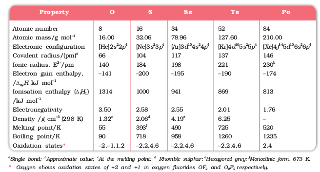
Anomalous behaviour of oxygen
The anomalous behaviour of oxygen, like other members of p-block present in second period is due to its small size and high electronegativity. One typical example of effects of small size and high electronegativity is the presence of strong hydrogen bonding in H2O which is not found in H2S.
The absence of d orbitals in oxygen limits its covalency to four and in practice, rarely exceeds two. On the other hand, in case of other elements of the group, the valence shells can be expanded and covalence exceeds four.
(i) Reactivity with hydrogen: All the elements of Group 16 form hydrides of the type H2E (E = O, S, Se, Te, Po). Some properties of hydrides are given in Table 7.7. Their acidic character increases from H2O to H2Te. The increase in acidic character can be explained in terms of decrease in bond enthalpy for the dissociation of H–E bond down the group. Owing to the decrease in enthalpy for the dissociation of H–E bond down the group, the thermal stability of hydrides also decreases from H2O to H2Po. All the hydrides except water possess reducing property and this character increases from H2S to H2Te.
Table 7.7: Properties of Hydrides of Group 16 Elements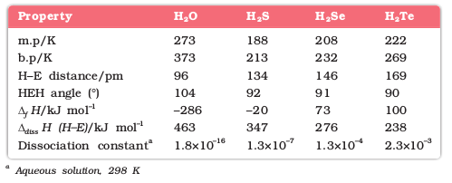
(ii) Reactivity with oxygen: All these elements form oxides of the EO2 and EO3 types where E = S, Se, Te or Po. Ozone (O3) and sulphur dioxide (SO2) are gases while selenium dioxide (SeO2) is solid. Reducing property of dioxide decreases from SO2 to TeO2; SO2 is reducing while TeO2 is an oxidising agent. Besides EO2 type, sulphur, selenium and tellurium also form EO3 type oxides (SO3, SeO3, TeO3). Both types of oxides are acidic in nature.
(iii) Reactivity towards the halogens: Elements of Group 16 form a large number of halides of the type, EX6, EX4 and EX2 where E is an element of the group and X is a halogen. The stability of the halides decreases in the order F– > Cl– > Br– > I–. Amongst hexahalides, hexafluorides are the only stable halides. All hexafluorides are gaseous in nature. They have octahedral structure. Sulphur hexafluoride, SF6 is exceptionally stable for steric reasons.
Amongst tetrafluorides, SF4 is a gas, SeF4 a liquid and TeF4 a solid. These fluorides have sp3d hybridisation and thus, have trigonal bipyramidal structures in which one of the equatorial positions is occupied by a lone pair of electrons. This geometry is also regarded as see-saw geometry.
All elements except selenium form dichlorides and dibromides. These dihalides are formed by sp3 hybridisation and thus, have tetrahedral structure. The well known monohalides are dimeric in nature. Examples are s2F2, s2Cl2, s2Br2, Se2Cl2 and Se2Br2. These dimeric halides undergo disproportionation as given below:
2Se2Cl2 → SeCl4 + 3Se
Example 7.11
H2S is less acidic than H2Te. Why?
Solution
Due to the decrease in bond (E–H) dissociation enthalpy down the group, acidic character increases.
Intext Questions
7.13 List the important sources of sulphur.
7.14 Write the order of thermal stability of the hydrides of Group 16 elements.
7.15 Why is H2O a liquid and H2S a gas ?
7.11 Dioxygen
Preparation
Dioxygen can be obtained in the laboratory by the following ways:
(i) By heating oxygen containing salts such as chlorates, nitrates and permanganates.
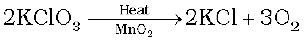
(ii) By the thermal decomposition of the oxides of metals low in the electrochemical series and higher oxides of some metals.
2Ag2O(s) → 4Ag(s) + O2(g); 2Pb3O4(s) → 6PbO(s) + O2(g)
2HgO(s) → 2Hg(l) + O2(g) ; 2PbO2(s) → 2PbO(s) + O2(g)
(iii) Hydrogen peroxide is readily decomposed into water and dioxygen by catalysts such as finely divided metals and manganese dioxide.
2H2O2(aq) → 2H2O(1) + O2(g)
On large scale it can be prepared from water or air. Electrolysis of water leads to the release of hydrogen at the cathode and oxygen at the anode.
Industrially, dioxygen is obtained from air by first removing carbon dioxide and water vapour and then, the remaining gases are liquefied and fractionally distilled to give dinitrogen and dioxygen.
Properties
Dioxygen is a colourless and odourless gas. Its solubility in water is to the extent of 3.08 cm3 in 100 cm3 water at 293 K which is just sufficient for the vital support of marine and aquatic life. It liquefies at 90 K and freezes at 55 K. Oxygen atom has three stable isotopes: 16O, 17O and 18O. Molecular oxygen, O2 is unique in being paramagnetic inspite of having even number of electrons (see Class XI Chemistry Book, Unit 4).
Dioxygen directly reacts with nearly all metals and non-metals except some metals ( e.g., Au, Pt) and some noble gases. Its combination with other elements is often strongly exothermic which helps in sustaining the reaction. However, to initiate the reaction, some external heating is required as bond dissociation enthalpy of oxgyen-oxygen double bond is high (493.4 kJ mol–1).
Some of the reactions of dioxygen with metals, non-metals and other compounds are given below:
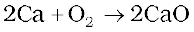
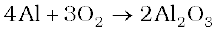

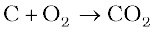
2ZnS + 3O2 → 2ZnO + 2SO2
Some compounds are catalytically oxidised. For example,
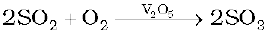
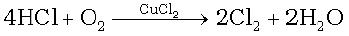
Uses: In addition to its importance in normal respiration and combustion processes, oxygen is used in oxyacetylene welding, in the manufacture of many metals, particularly steel. Oxygen cylinders are widely used in hospitals, high altitude flying and in mountaineering. The combustion of fuels, e.g., hydrazines in liquid oxygen, provides tremendous thrust in rockets.
Intext Questions
7.16 Which of the following does not react with oxygen directly? Zn, Ti, Pt, Fe
7.17 Complete the following reactions:
(i) C2H4 + O2 →
(ii) 4Al + 3 O2 →
7.12 Simple Oxides
A binary compound of oxygen with another element is called oxide. As already stated, oxygen reacts with most of the elements of the periodic table to form oxides. In many cases one element forms two or more oxides. The oxides vary widely in their nature and properties.
Oxides can be simple (e.g., MgO, Al2O3 ) or mixed (Pb3O4, Fe3O4). Simple oxides can be classified on the basis of their acidic, basic or amphoteric character. An oxide that combines with water to give an acid is termed acidic oxide (e.g., SO2, Cl2O7, CO2, N2O5 ). For example, SO2 combines with water to give H2SO3, an acid.
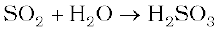
As a general rule, only non-metal oxides are acidic but oxides of some metals in high oxidation state also have acidic character (e.g., MN2O7, CrO3, V2O5). The oxides which give a base with water are known as basic oxides (e.g., Na2O, CaO, BaO). For example, CaO combines with water to give Ca(OH)2, a base.
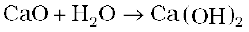
In general, metallic oxides are basic.
Some metallic oxides exhibit a dual behaviour. They show characteristics of both acidic as well as basic oxides. Such oxides are known as amphoteric oxides. They react with acids as well as alkalies. For example, Al2O3 reacts with acids as well as alkalies.
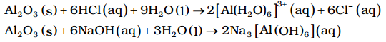
There are some oxides which are neither acidic nor basic. Such oxides are known as neutral oxides. Examples of neutral oxides are CO, NO and N2O.
7.13 Ozone
Ozone is an allotropic form of oxygen. It is too reactive to remain for long in the atmosphere at sea level. At a heigh of about 20 kilometres, it is formed from atmospheric oxygen in the presence of sunlight. This ozone layer protects the earth’s surface from an excessive concentration of ultraviolet (UV) radiations.
Preparation
When a slow dry stream of oxygen is passed through a silent electrical discharge, conversion of oxygen to ozone (10%) occurs. The product is known as ozonised oxygen.
3O2 → 2O3 ∆H0 (298 K) = +142 kJ mol–1
Since the formation of ozone from oxygen is an endothermic process, it is necessary to use a silent electrical discharge in its preparation to prevent its decomposition.
If concentrations of ozone greater than 10 per cent are required, a battery of ozonisers can be used, and pure ozone (b.p. 385 K) can be condensed in a vessel surrounded by liquid oxygen.
Properties
Pure ozone is a pale blue gas, dark blue liquid and violet-black solid. Ozone has a characteristic smell and in small concentrations it is harmless. However, if the concentration rises above about 100 parts per million, breathing becomes uncomfortable resulting in headache and nausea.
Ozone is thermodynamically unstable with respect to oxygen since its decomposition into oxygen results in the liberation of heat (∆H is negative) and an increase in entropy (∆S is positive). These two effects reinforce each other, resulting in large negative Gibbs energy change (∆G) for its conversion into oxygen. It is not really surprising, therefore, high concentrations of ozone can be dangerously explosive.
Due to the ease with which it liberates atoms of nascent oxygen (O3 → O2 + O), it acts as a powerful oxidising agent. For example, it oxidises lead sulphide to lead sulphate and iodide ions to iodine.
PbS(s) + 4O3(g) → PbSO4(s) + 4O2(g)
2I–(aq) + H2O(l) + O3(g) → 2OH–(aq) + I2(s) + O2(g)
When ozone reacts with an excess of potassium iodide solution buffered with a borate buffer (pH 9.2), iodine is liberated which can be titrated against a standard solution of sodium thiosulphate. This is a quantitative method for estimating O3 gas.
Experiments have shown that nitrogen oxides (particularly nitric oxide) combine very rapidly with ozone and there is, thus, the possibility that nitrogen oxides emitted from the exhaust systems of supersonic jet aeroplanes might be slowly depleting the concentration of the ozone layer in the upper atmosphere.
Another threat to this ozone layer is probably posed by the use of freons which are used in aerosol sprays and as refrigerants.
The two oxygen-oxygen bond lengths in the ozone molecule are identical (128 pm) and the molecule is angular as expected with a bond angle of about 117o. It is a resonance hybrid of two main forms:
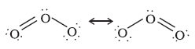
Uses: It is used as a germicide, disinfectant and for sterilising water. It is also used for bleaching oils, ivory, flour, starch, etc. It acts as an oxidising agent in the manufacture of potassium permanganate.
Intext Questions
7.18 Why does O3 act as a powerful oxidising agent?
7.19 How is O3 estimated quantitatively?
7.14 Sulphur — Allotropic Forms
Sulphur forms numerous allotropes of which the yellow rhombic (α-sulphur) and monoclinic (β -sulphur) forms are the most important. The stable form at room temperature is rhombic sulphur, which transforms to monoclinic sulphur when heated above 369 K.
Rhombic sulphur (α--sulphur)
This allotrope is yellow in colour, m.p. 385.8 K and specific gravity 2.06. Rhombic sulphur crystals are formed on evaporating the solution of roll sulphur in Cs2. It is insoluble in water but dissolves to some extent in benzene, alcohol and ether. It is readily soluble in Cs2.
Monoclinic sulphur (β-sulphur)
Its m.p. is 393 K and specific gravity 1.98. It is soluble in Cs2. This form of sulphur is prepared by melting rhombic sulphur in a dish and cooling, till crust is formed. Two holes are made in the crust and the remaining liquid poured out. On removing the crust, colourless needle shaped crystals of β-sulphur are formed. It is stable above 369 K and transforms into α-sulphur below it. Conversely, α-sulphur is stable below 369 K and transforms into β-sulphur above this. At 369 K both the forms are stable. This temperature is called transition temperature.
Both rhombic and monoclinic sulphur have S8 molecules. These S8 molecules are packed to give different crystal structures. The S8 ring in both the forms is puckered and has a crown shape. The molecular dimensions are given in Fig. 7.5(a).
Several other modifications of sulphur containing 6-20 sulphur atoms per ring have been synthesised in the last two decades. In cyclo-S6, the ring adopts the chair form and the molecular dimensions are as shown in Fig. 7.5 (b). At elevated temperatures (~1000 K), s2 is the dominant species and is paramagnetic like O2.
 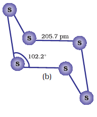
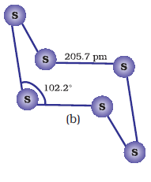
Fig. 7.5: The structures of (a) S8 ring in rhombic sulphur and (b) S6 form
Example 7.12
Which form of sulphur shows paramagnetic behaviour ?
Solution
In vapour state sulphur partly exists as s2 molecule which has two unpaired electrons in the antibonding p * orbitals like O2 and, hence, exhibits paramagnetism.
7.15 Sulphur Dioxide
Preparation
Sulphur dioxide is formed together with a little (6-8%) sulphur trioxide when sulphur is burnt in air or oxygen:
S(s) + O2(g) → SO2 (g)
In the laboratory it is readily generated by treating a sulphite with dilute sulphuric acid.
SO32-(aq) + 2H+ (aq) → H2O(l) + SO2 (g)
Industrially, it is produced as a by-product of the roasting of sulphide ores.
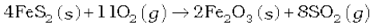
The gas after drying is liquefied under pressure and stored in steel cylinders.
Properties
Sulphur dioxide is a colourless gas with pungent smell and is highly soluble in water. It liquefies at room temperature under a pressure of two atmospheres and boils at 263 K.
Sulphur dioxide, when passed through water, forms a solution of sulphurous acid.
It reacts readily with sodium hydroxide solution, forming sodium sulphite, which then reacts with more sulphur dioxide to form sodium hydrogen sulphite.
2NaOH + SO2 → Na2SO3 + H2O
Na2SO3 + H2O + SO2 → 2NaHSO3
In its reaction with water and alkalies, the behaviour of sulphur dioxide is very similar to that of carbon dioxide.
Sulphur dioxide reacts with chlorine in the presence of charcoal (which acts as a catalyst) to give sulphuryl chloride, SO2Cl2. It is oxidised to sulphur trioxide by oxygen in the presence of vanadium(V) oxide catalyst.
SO2(g) + Cl2 (g) → SO2Cl2(l)
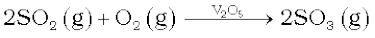
When moist, sulphur dioxide behaves as a reducing agent. For example, it converts iron(III) ions to iron(II) ions and decolourises acidified potassium permanganate(VII) solution; the latter reaction is a convenient test for the gas.
The molecule of SO2 is angular. It is a resonance hybrid of the two canonical forms:
Uses: Sulphur dioxide is used (i) in refining petroleum and sugar (ii) in bleaching wool and silk and (iii) as an anti-chlor, disinfectant and preservative. Sulphuric acid, sodium hydrogen sulphite and calcium hydrogen sulphite (industrial chemicals) are manufactured from sulphur dioxide. Liquid SO2 is used as a solvent to dissolve a number of organic and inorganic chemicals.
Intext Questions
7.20 What happens when sulphur dioxide is passed through an aqueous solution of Fe(III) salt?
7.21 Comment on the nature of two S–O bonds formed in SO2 molecule. Are the two S–O bonds in this molecule equal ?
7.22 How is the presence of SO2 detected
7.16 Oxoacids of Sulphur
Sulphur forms a number of oxoacids such as H2SO3, H2s2O3, H2s2O4, H2s2O5, H2SxO6 (x = 2 to 5), H2SO4, H2s2O7, H2SO5, H2s2O8 . Some of these acids are unstable and cannot be isolated. They are known in aqueous solution or in the form of their salts. Structures of some important oxoacids are shown in Fig. 7.6.
Fig. 7.6: Structures of some important oxoacids of sulphur
7.17 Sulphuric Acid
Manufacture
Sulphuric acid is one of the most important industrial chemicals worldwide.
Sulphuric acid is manufactured by the Contact Process which involves three steps:
(i) burning of sulphur or sulphide ores in air to generate SO2.
(ii) conversion of SO2 to SO3 by the reaction with oxygen in the presence of a catalyst (V2O5), and
(iii) absorption of SO3 in H2SO4 to give Oleum (H2s2O7).
A flow diagram for the manufacture of sulphuric acid is shown in (Fig. 7.7). The SO2 produced is purified by removing dust and other impurities such as arsenic compounds.
The key step in the manufacture of H2SO4 is the catalytic oxidation of SO2 with O2 to give SO3 in the presence of V2O5 (catalyst).
The reaction is exothermic, reversible and the forward reaction leads to a decrease in volume. Therefore, low temperature and high pressure are the favourable conditions for maximum yield. But the temperature should not be very low otherwise rate of reaction will become slow.
In practice, the plant is operated at a pressure of 2 bar and a temperature of 720 K. The SO3 gas from the catalytic converter is absorbed in concentrated H2SO4 to produce oleum. Dilution of oleum with water gives H2SO4 of the desired concentration. In the industry two steps are carried out simultaneously to make the process a continuous one and also to reduce the cost.
SO3 + H2SO4 → H2s2O7
(Oleum)
The sulphuric acid obtained by Contact process is 96-98% pure.
Fig. 7.7: Flow diagram for the manufacture of sulphuric acid
Properties
Sulphuric acid is a colourless, dense, oily liquid with a specific gravity of 1.84 at 298 K. The acid freezes at 283 K and boils at 611 K. It dissolves in water with the evolution of a large quantity of heat. Hence, care must be taken while preparing sulphuric acid solution from concentrated sulphuric acid. The concentrated acid must be added slowly into water with constant stirring.
The chemical reactions of sulphuric acid are as a result of the following characteristics: (a) low volatility (b) strong acidic character (c) strong affinity for water and (d) ability to act as an oxidising agent. In aqueous solution, sulphuric acid ionises in two steps.
H2SO4(aq) + H2O(l) → H3O+(aq) + HSO4–(aq);  = very large (
= very large ( >10)
>10)
HSO4–(aq) + H2O(l) → H3O+(aq) + SO42-(aq) ; = 1.2 × 10–2
The larger value of ( >10) means that H2SO4 is largely dissociated into H+ and HSO4–. Greater the value of dissociation constant (Ka), the stronger is the acid.
>10) means that H2SO4 is largely dissociated into H+ and HSO4–. Greater the value of dissociation constant (Ka), the stronger is the acid.
The acid forms two series of salts: normal sulphates (such as sodium sulphate and copper sulphate) and acid sulphates (e.g., sodium hydrogen sulphate).
Sulphuric acid, because of its low volatility can be used to manufacture more volatile acids from their corresponding salts.
2 MX + H2SO4 → 2 HX + M2SO4 (X = F, Cl, NO3)
(M = Metal)
Concentrated sulphuric acid is a strong dehydrating agent. Many wet gases can be dried by passing them through sulphuric acid, provided the gases do not react with the acid. Sulphuric acid removes water from organic compounds; it is evident by its charring action on carbohydrates.
C12H22O11 12C + 11H2O
Hot concentrated sulphuric acid is a moderately strong oxidising agent. In this respect, it is intermediate between phosphoric and nitric acids. Both metals and non-metals are oxidised by concentrated sulphuric acid, which is reduced to SO2.
Cu + 2 H2SO4(conc.) → CuSO4 + SO2 + 2H2O
3S + 2H2SO4(conc.) → 3SO2 + 2H2O
C + 2H2SO4(conc.) → CO2 + 2 SO2 + 2 H2O
Uses: Sulphuric acid is a very important industrial chemical. A nation's industrial strength can be judged by the quantity of sulphuric acid it produces and consumes. It is needed for the manufacture of hundreds of other compounds and also in many industrial processes. The bulk of sulphuric acid produced is used in the manufacture of fertilisers (e.g., ammonium sulphate, superphosphate). Other uses are in: (a) petroleum refining (b) manufacture of pigments, paints and dyestuff intermediates (c) detergent industry (d) metallurgical applications (e.g., cleansing metals before enameling, electroplating and galvanising (e) storage batteries (f) in the manufacture of nitrocellulose products and (g) as a laboratory reagent.
Intext Questions
7.23 Mention three areas in which H2SO4 plays an important role.
7.24 Write the conditions to maximise the yield of H2SO4 by Contact process.
7.25 Why is Ka2 « Ka1 for H2SO4 in water ?
7.18 Group 17 Elements
Fluorine, chlorine, bromine, iodine and astatine are members of Group 17. These are collectively known as the halogens (Greek halo means salt and genes means born i.e., salt producers). The halogens are highly reactive non-metallic elements. Like Groups 1 and 2, the elements of Group 17 show great similarity amongst themselves. That much similarity is not found in the elements of other groups of the periodic table. Also, there is a regular gradation in their physical and chemical properties. Astatine is a radioactive element.
7.18.1 Occurrence
Fluorine and chlorine are fairly abundant while bromine and iodine less so. Fluorine is present mainly as insoluble fluorides (fluorspar CaF2, cryolite Na3AlF6 and fluoroapatite 3Ca3(PO4)2.CaF2) and small quantities are present in soil, river water plants and bones and teeth of animals. Sea water contains chlorides, bromides and iodides of sodium, potassium, magnesium and calcium, but is mainly sodium chloride solution (2.5% by mass). The deposits of dried up seas contain these compounds, e.g., sodium chloride and carnallite, KCl.MgCl2.6H2O. Certain forms of marine life contain iodine in their systems; various seaweeds, for example, contain upto 0.5% of iodine and Chile saltpetre contains upto 0.2% of sodium iodate.
The important atomic and physical properties of Group 17 elements along with their electronic configurations are given in Table 7.8.
Table 7.8: Atomic and Physical Properties of Halogens
The trends of some of the atomic, physical and chemical properties are discussed below.
7.18.2 Electronic Configuration
All these elements have seven electrons in their outermost shell (ns2np5) which is one electron short of the next noble gas.
7.18.3 Atomic and Ionic Radii
The halogens have the smallest atomic radii in their respective periods due to maximum effective nuclear charge. The atomic radius of fluorine like the other elements of second period is extremely small. Atomic and ionic radii increase from fluorine to iodine due to increasing number of quantum shells.
7.18.4 Ionisation Enthalpy
They have little tendency to lose electron. Thus they have very high ionisation enthalpy. Due to increase in atomic size, ionisation enthalpy decreases down the group.
7.18.5 Electron Gain Enthalpy
Halogens have maximum negative electron gain enthalpy in the corresponding periods. This is due to the fact that the atoms of these elements have only one electron less than stable noble gas configurations. Electron gain enthalpy of the elements of the group becomes less negative down the group. However, the negative electron gain enthalpy of fluorine is less than that of chlorine. It is due to small size of fluorine atom. As a result, there are strong interelectronic repulsions in the relatively small 2p orbitals of fluorine and thus, the incoming electron does not experience much attraction.
7.18.6 Electronegativity
They have very high electronegativity. The electronegativity decreases down the group. Fluorine is the most electronegative element in the periodic table.
Example 7.14
Halogens have maximum negative electron gain enthalpy in the respective periods of the periodic table. Why?
Solution
Halogens have the smallest size in their respective periods and therefore high effective nuclear charge. As a consequence, they readily accept one electron to acquire noble gas electronic configuration.
7.18.7 Physical Properties
Halogens display smooth variations in their physical properties. Fluorine and chlorine are gases, bromine is a liquid and iodine is a solid. Their melting and boiling points steadily increase with atomic number. All halogens are coloured. This is due to absorption of radiations in visible region which results in the excitation of outer electrons to higher energy level. By absorbing different quanta of radiation, they display different colours. For example, F2, has yellow, Cl2 , greenish yellow, Br2, red and I2, violet colour. Fluorine and chlorine react with water. Bromine and iodine are only sparingly soluble in water but are soluble in various organic solvents such as chloroform, carbon tetrachloride, carbon disulphide and hydrocarbons to give coloured solutions.
One curious anomaly we notice from Table 7.8 is the smaller enthalpy of dissociation of F2 compared to that of Cl2 whereas X-X bond dissociation enthalpies from chlorine onwards show the expected trend: Cl – Cl > Br – Br > I – I. A reason for this anomaly is the relatively large electron-electron repulsion among the lone pairs in F2 molecule where they are much closer to each other than in case of Cl2.
Example 7.15
Although electron gain enthalpy of fluorine is less negative as compared to chlorine, fluorine is a stronger oxidising agent than chlorine. Why?
Solution
It is due to
(i) low enthalpy of dissociation of F-F bond (Table 7.8).
(ii) high hydration enthalpy of F– (Table 7.8).
7.18.8 Chemical Properties
Oxidation states and trends in chemical reactivity
All the halogens exhibit –1 oxidation state. However, chlorine, bromine and iodine exhibit + 1, + 3, + 5 and + 7 oxidation states also as explained below:
The higher oxidation states of chlorine, bromine and iodine are realised mainly when the halogens are in combination with the small and highly electronegative fluorine and oxygen atoms. e.g., in interhalogens, oxides and oxoacids. The oxidation states of +4 and +6 occur in the oxides and oxoacids of chlorine and bromine. The fluorine atom has no d orbitals in its valence shell and therefore cannot expand its octet. Being the most electronegative, it exhibits only –1 oxidation state.
All the halogens are highly reactive. They react with metals and non-metals to form halides. The reactivity of the halogens decreases down the group.
The ready acceptance of an electron is the reason for the strong oxidising nature of halogens. F2 is the strongest oxidising halogen and it oxidises other halide ions in solution or even in the solid phase. In general, a halogen oxidises halide ions of higher atomic number.
F2 + 2X– → 2F– + X2 (X = Cl, Br or I)
Cl2 + 2X– → 2Cl– + X2 (X = Br or I)
Br2 + 2I– → 2Br– + I2
The decreasing oxidising ability of the halogens in aqueous solution down the group is evident from their standard electrode potentials (Table 7.8) which are dependent on the parameters indicated below:
The relative oxidising power of halogens can further be illustrated by their reactions with water. Fluorine oxidises water to oxygen whereas chlorine and bromine react with water to form corresponding hydrohalic and hypohalous acids. The reaction of iodine with water is non-spontaneous. In fact, I– can be oxidised by oxygen in acidic medium; just the reverse of the reaction observed with fluorine.
Anomalous behaviour of fluorine
Like other elements of p-block present in second period of the periodic table, fluorine is anomalous in many properties. For example, ionisation enthalpy, electronegativity, and electrode potentials are all higher for fluorine than expected from the trends set by other halogens. Also, ionic and covalent radii, m.p. and b.p., enthalpy of bond dissociation and electron gain enthalpy are quite lower than expected. The anomalous behaviour of fluorine is due to its small size, highest electronegativity, low F-F bond dissociation enthalpy, and non availability of d orbitals in valence shell.
Most of the reactions of fluorine are exothermic (due to the small and strong bond formed by it with other elements). It forms only one oxoacid while other halogens form a number of oxoacids. Hydrogen fluoride is a liquid (b.p. 293 K) due to strong hydrogen bonding. Other hydrogen halides are gases.
(i) Reactivity towards hydrogen: They all react with hydrogen to give hydrogen halides but affinity for hydrogen decreases from fluorine to iodine. Hydrogen halides dissolve in water to form hydrohalic acids. Some of the properties of hydrogen halides are given in Table 7.9. The acidic strength of these acids varies in the order: HF < HCl < HBr < HI. The stability of these halides decreases down the group due to decrease in bond (H–X) dissociation enthalpy in the order: H–F > H–Cl > H–Br > H–I.
Table 7.9: Properties of Hydrogen Halides
(ii) Reactivity towards oxygen: Halogens form many oxides with oxygen but most of them are unstable. Fluorine forms two oxides OF2 and O2F2. However, only OF2 is thermally stable at 298 K. These oxides are essentially oxygen fluorides because of the higher electronegativity of fluorine than oxygen. Both are strong fluorinating agents. O2F2 oxidises plutonium to PuF6 and the reaction is used in removing plutonium as PuF6 from spent nuclear fuel.
Chlorine, bromine and iodine form oxides in which the oxidation states of these halogens range from +1 to +7. A combination of kinetic and thermodynamic factors lead to the generally decreasing order of stability of oxides formed by halogens, I > Cl > Br. The higher oxides of halogens tend to be more stable than the lower ones.
Chlorine oxides, Cl2O, ClO2, Cl2O6 and Cl2O7 are highly reactive oxidising agents and tend to explode. ClO2 is used as a bleaching agent for paper pulp and textiles and in water treatment.
The bromine oxides, Br2O, BrO2 , BrO3 are the least stable halogen oxides (middle row anomally) and exist only at low temperatures. They are very powerful oxidising agents.
The iodine oxides, I2O4 , I2O5, I2O7 are insoluble solids and decompose on heating. I2O5 is a very good oxidising agent and is used in the estimation of carbon monoxide.
(iii) Reactivity towards metals: Halogens react with metals to form metal halides. For example, bromine reacts with magnesium to give magnesium bromide.
The ionic character of the halides decreases in the order MF > MCl > MBr > MI where M is a monovalent metal. If a metal exhibits more than one oxidation state, the halides in higher oxidation state will be more covalent than the one in lower oxidation state. For example, SnCl4, PbCl4, SbCl5 and UF6 are more covalent than SnCl2, PbCl2, SbCl3 and UF4 respectively.
(iv) Reactivity of halogens towards other halogens: Halogens combine amongst themselves to form a number of compounds known as interhalogens of the types XX′ , XX3′, XX5′ and XX7′ where X is a larger size halogen and X′ is smaller size halogen.
Example 7.16
Fluorine exhibits only –1 oxidation state whereas other halogens exhibit + 1, + 3, + 5 and + 7 oxidation states also. Explain.
Solution
Fluorine is the most electronegative element and cannot exhibit any positive oxidation state. Other halogens have d orbitals and therefore, can expand their octets and show + 1, + 3, + 5 and + 7 oxidation states also.
Intext Questions
7.26 Considering the parameters such as bond dissociation enthalpy, electron gain enthalpy and hydration enthalpy, compare the oxidising power of F2 and Cl2.
7.27 Give two examples to show the anomalous behaviour of fluorine.
7.28 Sea is the greatest source of some halogens. Comment.
7.19 Chlorine
Chlorine was discovered in 1774 by Scheele by the action of HCl on MnO2. In 1810 Davy established its elementary nature and suggested the name chlorine on account of its colour (Greek, chloros = greenish yellow).
Preparation
It can be prepared by any one of the following methods:
(i) By heating manganese dioxide with concentrated hydrochloric acid.
MnO2 + 4HCl → MnCl2 + Cl2 + 2H2O
However, a mixture of common salt and concentrated H2SO4 is used in place of HCl.
4NaCl + MnO2 + 4H2SO4 → MnCl2 + 4NaHSO4 + 2H2O + Cl2
(ii) By the action of HCl on potassium permanganate.
2KMnO4 + 16HCl → 2KCl + 2MnCl2 + 8H2O + 5Cl2
Manufacture of chlorine
(i) Deacon’s process: By oxidation of hydrogen chloride gas by atmospheric oxygen in the presence of CuCl2 (catalyst) at 723 K.
(ii) Electrolytic process: Chlorine is obtained by the electrolysis of brine (concentrated NaCl solution). Chlorine is liberated at anode. It is also obtained as a by–product in many chemical industries.
Properties
It is a greenish yellow gas with pungent and suffocating odour. It is about 2-5 times heavier than air. It can be liquefied easily into greenish yellow liquid which boils at 239 K. It is soluble in water.
Chlorine reacts with a number of metals and non-metals to form chlorides.
2Al + 3Cl2 → 2AlCl3; P4 + 6Cl2 → 4PCl3
2Na + Cl2 → 2NaCl; S8 + 4Cl2 → 4s2Cl2
2Fe + 3Cl2 → 2FeCl3;
It has great affinity for hydrogen. It reacts with compounds containing hydrogen to form HCl.
With excess ammonia, chlorine gives nitrogen and ammonium chloride whereas with excess chlorine, nitrogen trichloride (explosive) is formed.
8NH3 + 3Cl2 → 6NH4Cl + N2 ; NH3 + 3Cl2 → NCl3 + 3HCl
(excess) (excess)
With cold and dilute alkalies chlorine produces a mixture of chloride and hypochlorite but with hot and concentrated alkalies it gives chloride and chlorate.
2NaOH + Cl2 → NaCl + NaOCl + H2O
(cold and dilute)
6 NaOH + 3Cl2 → 5NaCl + NaClO3 + 3H2O
(hot and conc.)
With dry slaked lime it gives bleaching powder.
2Ca(OH)2 + 2Cl2 → Ca(OCl)2 + CaCl2 + 2H2O
The composition of bleaching powder is Ca(OCl)2.CaCl2.Ca(OH)2.2H2O.
Chlorine reacts with hydrocarbons and gives substitution products with saturated hydrocarbons and addition products with unsaturated hydrocarbons. For example,
CH4 + Cl2 CH3Cl + HCl
Methane Methyl chloride
C2H4 + Cl2 C2H4Cl2
Ethene 1,2-Dichloroethane
Chlorine water on standing loses its yellow colour due to the formation of HCl and HOCl. Hypochlorous acid (HOCl) so formed, gives nascent oxygen which is responsible for oxidising and bleaching properties of chlorine.
(i) It oxidises ferrous to ferric and sulphite to sulphate. Chlorine oxidises sulphur dioxide to sulphur trioxide and iodine to iodate. In the presence of water they form sulphuric acid and iodic acid respectively.
2FeSO4 + H2SO4 + Cl2 → Fe2(SO4)3 + 2HCl
Na2SO3 + Cl2 + H2O → Na2SO4 + 2HCl
SO2 + 2H2O + Cl2 → H2SO4 + 2HCl
I2 + 6H2O + 5Cl2 → 2HIO3 + 10HCl
(ii) It is a powerful bleaching agent; bleaching action is due to oxidation.
Cl2 + H2O → 2HCl + O
Coloured substance + O → Colourless substance
Uses: It is used (i) for bleaching woodpulp (required for the manufacture of paper and rayon), bleaching cotton and textiles, (ii) in the extraction of gold and platinum (iii) in the manufacture of dyes, drugs and organic compounds such as CCl4, CHCl3, DDT, refrigerants, etc. (iv) in sterilising drinking water and (v) preparation of poisonous gases such as phosgene (COCl2), tear gas (CCl3NO2), mustard gas (ClCH2CH2SCH2CH2Cl).
Example 7.17
Write the balanced chemical equation for the reaction of Cl2 with hot and concentrated NaOH. Is this reaction a disproportionation reaction? Justify.
Solution
3Cl2 + 6NaOH → 5NaCl + NaClO3 + 3H2O
Yes, chlorine from zero oxidation state is changed to –1 and +5 oxidation states.
Intext Questions
7.29 Give the reason for bleaching action of Cl2.
7.30 Name two poisonous gases which can be prepared from chlorine gas.
7.20 Hydrogen Chloride
It bleaches vegetable or organic matter in the presence of moisture. Bleaching effect of chlorine is permanent. Glauber prepared this acid in 1648 by heating common salt with concentrated sulphuric acid. Davy in 1810 showed that it is a compound of hydrogen and chlorine.
Preparation
In laboratory, it is prepared by heating sodium chloride with concentrated sulphuric acid.
NaCl + H2SO4 NaHSO4 + HCl
NaHSO4 + NaCl Na2SO4 + HCl
HCl gas can be dried by passing through concentrated sulphuric acid.
Properties
It is a colourless and pungent smelling gas. It is easily liquefied to a colourless liquid (b.p.189 K) and freezes to a white crystalline solid
(f.p. 159 K). It is extremely soluble in water and ionises as follows:
Its aqueous solution is called hydrochloric acid. High value of dissociation constant (Ka) indicates that it is a strong acid in water.
It reacts with NH3 and gives white fumes of NH4Cl.
NH3 + HCl → NH4Cl
When three parts of concentrated HCl and one part of concentrated HNO3 are mixed, aqua regia is formed which is used for dissolving noble metals, e.g., gold, platinum.
Hydrochloric acid decomposes salts of weaker acids, e.g., carbonates, hydrogencarbonates, sulphites, etc.
Na2CO3 + 2HCl → 2NaCl + H2O + CO2
NaHCO3 + HCl → NaCl + H2O + CO2
Na2SO3 + 2HCl → 2NaCl + H2O + SO2
Uses: It is used (i) in the manufacture of chlorine, NH4Cl and glucose (from corn starch), (ii) for extracting glue from bones and purifying bone black, (iii)
in medicine and as a laboratory reagent.
Example 7.18
When HCl reacts with finely powdered iron, it forms ferrous chloride and not ferric chloride. Why?
Solution
Its reaction with iron produces H2.
2 2 Fe + 2HCl → FeCl + H2
Liberation of hydrogen prevents the formation of ferric chloride.
7.21 Oxoacids of Halogens
Due to high electronegativity and small size, fluorine forms only one oxoacid, HOF known as fluoric (I) acid or hypofluorous acid. The other halogens form several oxoacids. Most of them cannot be isolated in pure state. They are stable only in aqueous solutions or in the form of their salts. The oxoacids of halogens are given in Table 7.10 and their structures are given in Fig. 7.8.
Table 7.10: Oxoacids of Halogens

Fig. 7.8 The structures of oxoacids of chlorine
7.22 Interhalogen Compounds
When two different halogens react with each other, interhalogen compounds are formed. They can be assigned general compositions as XX′ , XX3′, XX5′ and XX7′ where X is halogen of larger size and X′ of smaller size and X is more electropositive than X′. As the ratio between radii of X and X′ increases, the number of atoms per molecule also increases. Thus, iodine (VII) fluoride should have maximum number of atoms as the ratio of radii between I and F should be maximum. That is why its formula is IF7 (having maximum number of atoms).
Preparation
The interhalogen compounds can be prepared by the direct combination or by the action of halogen on lower interhalogen compounds. The product formed depends upon some specific conditions, For e.g.,
Properties
Some properties of interhalogen compounds are given in Table 7.11.
Table 7.11: Some Properties of Interhalogen Compounds
These are all covalent molecules and are diamagnetic in nature. They are volatile solids or liquids at 298 K except ClF which is a gas. Their physical properties are intermediate between those of constituent halogens except that their m.p. and b.p. are a little higher than expected.
Their chemical reactions can be compared with the individual halogens. In general, interhalogen compounds are more reactive than halogens (except fluorine). This is because X–X′ bond in interhalogens is weaker than X–X bond in halogens except F–F bond. All these undergo hydrolysis giving halide ion derived from the smaller halogen and a hypohalite ( when XX′), halite ( when XX′3), halate (when XX′5) and perhalate (when XX′7) anion derived from the larger halogen.
Their molecular structures are very interesting which can be explained on the basis of VSEPR theory (Example 7.19). The XX3 compounds have the bent ‘T’ shape, XX5 compounds square pyramidal and IF7 has pentagonal bipyramidal structures (Table 7.11).
Example 7.19
Discuss the molecular shape of BrF3 on the basis of VSEPR theory.
Solution
The central atom Br has seven electrons in the valence shell. Three of these will form electronpair bonds with three fluorine atoms leaving behind four electrons. Thus, there are three bond pairs and two lone pairs. According to VSEPR theory, these will occupy the corners of a trigonal bipyramid. The two lone pairs will occupy the equatorial positions to minimise lone pair-lone pair and the bond pairlone pair repulsions which are greater than the bond pair-bond pair repulsions. In addition, the axial fluorine atoms will be bent towards the equatorial fluorine in order to minimise the lone-pair-lone pair repulsions. The shape would be that of a slightly bent 'T'.
Uses: These compounds can be used as non aqueous solvents. Interhalogen compounds are very useful fluorinating agents. ClF3 and BrF3 are used for the
production of UF6 in the enrichment of 235U.
U(s) + 3ClF3(l) → UF6(g) + 3ClF(g)
Intext Question
7.31 Why is ICl more reactive than I2?
7.23 Group 18 Elements
Group 18 consists of six elements: helium, neon, argon, krypton, xenon and radon. All these are gases and chemically unreactive. They form very few compounds. Because of this they are termed noble gases.
All the noble gases except radon occur in the atmosphere. Their atmospheric abundance in dry air is ~ 1% by volume of which argon is the major constituent. Helium and sometimes neon are found in minerals of radioactive origin e.g., pitchblende, monazite, cleveite. The main commercial source of helium is natural gas. Xenon and radon are the rarest elements of the group. Radon is obtained as a decay product of 226Ra.
Example 7.20
Why are the elements of Group 18 known as noble gases ?
Solution
The elements present in Group 18 have their valence shell orbitals completely filled and, therefore, react with a few elements only under certain conditions. Therefore, they are now known as noble gases.
The important atomic and physical properties of the Group 18 elements along with their electronic configurations are given in Table 7.12. The trends in some of the atomic, physical and chemical properties of the group are discussed here.
Table 7.12: Atomic and Physical Properties of Group 18 Elements
7.23.2 Electronic Configuration
All noble gases have general electronic configuration ns2np6 except helium which has 1s2 (Table 7.12). Many of the properties of noble gases including their inactive nature are ascribed to their closed shell structures.
7.23.3 Ionisation Enthalpy
Due to stable electronic configuration these gases exhibit very high ionisation enthalpy. However, it decreases down the group with increase in atomic size.
7.23.4 Atomic Radii
Atomic radii increase down the group with increase in atomic number.
7.23.5 Electron Gain Enthalpy
Since noble gases have stable electronic configurations, they have no tendency to accept the electron and therefore, have large positive values of electron gain enthalpy.
Physical Properties
All the noble gases are monoatomic. They are colourless, odourless and tasteless. They are sparingly soluble in water. They have very low melting and boiling points because the only type of interatomic interaction in these elements is weak dispersion forces. Helium has the lowest boiling point (4.2 K) of any known substance. It has an unusual property of diffusing through most commonly used laboratory materials such as rubber, glass or plastics.
Example 7.21
Noble gases have very low boiling points. Why?
Solution
Noble gases being monoatomic have no interatomic forces except weak dispersion forces and therefore, they are liquefied at very low temperatures. Hence, they have low boiling points
Chemical Properties
In general, noble gases are least reactive. Their inertness to chemical reactivity is attributed to the following reasons:
(i) The noble gases except helium (1s2) have completely filled ns2np6 electronic configuration in their valence shell.
(ii) They have high ionisation enthalpy and more positive electron gain enthalpy.
The reactivity of noble gases has been investigated occasionally, ever since their discovery, but all attempts to force them to react to form the compounds, were unsuccessful for quite a few years. In March 1962, Neil Bartlett, then at the University of British Columbia, observed the reaction of a noble gas. First, he prepared a red compound which is formulated as O2+PtF6–. He, then realised that the first ionisation enthalpy of molecular oxygen (1175 kJmol–1) was almost identical with that of xenon (1170 kJ mol–1). He made efforts to prepare same type of compound with Xe and was successful in preparing another red colour compound Xe+PtF6– by mixing PtF6 and xenon. After this discovery, a number of xenon compounds mainly with most electronegative elements like fluorine and oxygen, have been synthesised.
The compounds of krypton are fewer. Only the difluoride (KrF2) has been studied in detail. Compounds of radon have not been isolated but only identified (e.g., RnF2) by radiotracer technique. No true compounds of Ar, Ne or He are yet known.
(a) Xenon-fluorine compounds
Xenon forms three binary fluorides, XeF2, XeF4 and XeF6 by the direct reaction of elements under appropriate experimental conditions.
Xe (g) + F2 (g) XeF2(s)
(xenon in excess)
Xe (g) + 2F2 (g) XeF4(s)
(1:5 ratio)
Xe (g) + 3F2 (g) XeF6(s)
(1:20 ratio)
XeF6 can also be prepared by the interaction of XeF4 and O2F2 at 143K.
XeF2, XeF4 and XeF6 are colourless crystalline solids and sublime readily at 298 K. They are powerful fluorinating agents. They are readily hydrolysed even by traces of water. For example, XeF2 is hydrolysed to give Xe, HF and O2.
2XeF2 (s) + 2H2O(l) → 2Xe (g) + 4 HF(aq) + O2(g)
The structures of the three xenon fluorides can be deduced from VSEPR and these are shown in Fig. 7.9. XeF2 and XeF 4 have linear and square planar structures respectively. XeF6 has seven electron pairs (6 bonding pairs and one lone pair) and would, thus, have a distorted octahedral structure as found experimentally in the gas phase.
Xenon fluorides react with fluoride ion acceptors to form cationic species and fluoride ion donors to form fluoroanions.
XeF2 + PF5 → [XeF]+ [PF6]–; XeF4 + SbF5 → [XeF3]+ [SbF6]–
XeF6 + MF → M+ [XeF7]– (M = Na, K, Rb or Cs)
(b) Xenon-oxygen compounds
Hydrolysis of XeF4 and XeF6 with water gives Xe03.
6XeF4 + 12 H2O → 4Xe + 2XeO3 + 24 HF + 3 O2
XeF6 + 3 H2O → XeO3 + 6 HF
Partial hydrolysis of XeF6 gives oxyfluorides, XeOF4 and XeO2F2.
XeF6 + H2O → XeOF4 + 2 HF
XeF6 + 2 H2O → XeO2F2 + 4HF
XeO3 is a colourless explosive solid and has a pyramidal molecular structure (Fig. 7.9). XeOF4 is a colourless volatile liquid and has a square pyramidal molecular structure (Fig.7.9).
Fig. 7.9 The structures of (a) XeF2 (b) XeF4 (c) XeF6 (d) XeOF4 and (e) XeO3
Example 7.22
Does the hydrolysis of XeF6 lead to a redox reaction?
Solution
No, the products of hydrolysis are XeOF4 and XeO2F2 where the oxidation states of all the elements remain the same as it was in the reacting state.
Uses: Helium is a non-inflammable and light gas. Hence, it is used in filling balloons for meteorological observations. It is also used in gas-cooled nuclear reactors. Liquid helium (b.p. 4.2 K) finds use as cryogenic agent for carrying out various experiments at low temperatures. It is used to produce and sustain powerful superconducting magnets which form an essential part of modern NMR spectrometers and Magnetic Resonance Imaging (MRI) systems for clinical diagnosis. It is used as a diluent for oxygen in modern diving apparatus because of its very low solubility in blood.
Neon is used in discharge tubes and fluorescent bulbs for advertisement display purposes. Neon bulbs are used in botanical gardens and in green houses. Argon is used mainly to provide an inert atmosphere in high temperature metallurgical processes (arc welding of metals or alloys) and for filling electric bulbs. It is also used in the laboratory for handling substances that are air-sensitive. There are no significant uses of Xenon and Krypton. They are used in light bulbs designed for special purposes.
Intext Questions
7.32 Why is helium used in diving apparatus?
7.33 Balance the following equation: XeF6 + H2O → XeO2F2 + HF
7.34 Why has it been difficult to study the chemistry of radon?
Summary
Groups 13 to 18 of the periodic table consist of p-block elements with their valence shell electronic configuration ns2np1–6. Groups 13 and 14 were dealt with in Class XI. In this Unit remaining groups of the p-block have been discussed.
Group 15 consists of five elements namely, N, P, As, Sb and Bi which have general electronic configuration ns2np3. Nitrogen differs from other elements of this group due to small size, formation of pp–pp multiple bonds with itself and with highly electronegative atom like O or C and non-availability of d orbitals to expand its valence shell. Elements of group 15 show gradation in properties. They react with oxygen, hydrogen and halogens. They exhibit two important oxidation states, + 3 and + 5 but +3 oxidation is favoured by heavier elements due to 'inert pair effect'.
Dinitrogen can be prepared in laboratory as well as on industrial scale. It forms oxides in various oxidation states as N2O, NO, N2O3, NO2, N2O4 and N2O5. These oxides have resonating structures and have multiple bonds. Ammonia can be prepared on large scale by Haber's process. HNO3 is an important industrial chemical. It is a strong monobasic acid and is a powerful oxidising agent. Metals and non-metals react with HNO3 under different conditions to give NO or NO2.
Phosphorus exists as P4 in elemental form. It exists in several allotropic forms. It forms hydride, PH3 which is a highly poisonous gas. It forms two types of halides as PX3 and PX5. PCl3 is prepared by the reaction of white phosphorus with dry chlorine while PCl5 is prepared by the reaction of phosphorus with SO2Cl2. Phosphorus forms a number of oxoacids. Depending upon the number of P–OH groups, their basicity varies. The oxoacids which have P–H bonds are good reducing agents
The Group 16 elements have general electronic configuration ns2nP4. They show maximum oxidation state, +6. Gradation in physical and chemical properties is observed in the group 16 elements. In laboratory, dioxygen is prepared by heating KClO3 in presence of MnO2. It forms a number of oxides with metals. Allotropic form of oxygen is O3 which is a highly oxidising agent. Sulphur forms a number of allotropes. Of these, α – and ß– forms of sulphur are the most important. Sulphur combines with oxygen to give oxides such as SO2 and SO3. SO2 is prepared by the direct union of sulphur with oxygen. SO2 is used in the manufacture of H2SO4. Sulphur forms a number of oxoacids. Amongst them, the most important is H2SO4. It is prepared by contact process. It is a dehydrating and oxidising agent. It is used in the manufacture of several compounds.
Group 17 of the periodic table consists of the following elements F, Cl, Br, I and At.These elements are extremely reactive and as such they are found in the combined state only. The common oxidation state of these elements is –1. However, highest oxidation state can be +7. They show regular gradation in physical and chemical properties. They form oxides, hydrogen halides, interhalogen compounds and oxoacids. Chlorine is conveniently obtained by the reaction of HCl with KMnO4. HCl is prepared by heating NaCl with concentrated H2SO4. Halogens combine with one another to form interhalogen compounds of the type XX1 n (n = 1, 3, 5, 7) where X1 is lighter than X. A number of oxoacids of halogens are known. In the structures of these oxoacids, halogen is the central atom which is bonded in each case with one OH bond as X–OH. In some cases X = 0 bonds are also found.
Group 18 of the periodic table consists of noble gases. They have ns2 np6 valence shell electronic configuration except He which has 1s2. All the gases except Rn
occur in atmosphere. Rn is obtained as the decay product of 226Ra.
Due to complete octet of outermost shell, they have less tendency to form compounds. The best characterised compounds are those of xenon with fluorine and oxygen only under certain conditions. These gases have several uses. Argon is used to provide inert atmosphere, helium is used in filling balloons for meteorological observations, neon is used in discharge tubes and fluorescent bulbs.
Exercises
7.1 Discuss the general characteristics of Group 15 elements with reference to their electronic configuration, oxidation state, atomic size, ionisation enthalpy
and electronegativity.
7.2 Why does the reactivity of nitrogen differ from phosphorus?
7.3 Discuss the trends in chemical reactivity of group 15 elements.
7.4 Why does NH3 form hydrogen bond but PH3 does not?
7.5 How is nitrogen prepared in the laboratory? Write the chemical equations of the reactions involved.
7.6 How is ammonia manufactured industrially?
7.7 Illustrate how copper metal can give different products on reaction with HNO3.
7.8 Give the resonating structures of NO2 and N2O5.
7.9 The HNH angle value is higher than HPH, HAsH and HSbH angles. Why? [Hint: Can be explained on the basis of sp3 hybridisation in NH3 and only s–p bonding between hydrogen and other elements of the group].
7.10 Why does R3P = O exist but R3N = O does not (R = alkyl group)?
7.11 Explain why NH3 is basic while BiH3 is only feebly basic.
7.12 Nitrogen exists as diatomic molecule and phosphorus as P4. Why?
7.13 Write main differences between the properties of white phosphorus and red phosphorus.
7.14 Why does nitrogen show catenation properties less than phosphorus?
7.15 Give the disproportionation reaction of H3PO3.
7.16 Can PCl5 act as an oxidising as well as a reducing agent? Justify.
7.17 Justify the placement of O, S, Se, Te and Po in the same group of the periodic table in terms of electronic configuration, oxidation state and hydride
formation.
7.18 Why is dioxygen a gas but sulphur a solid?
7.19 Knowing the electron gain enthalpy values for O→ O– and O → O2– as –141 and 702 kJ mol–1 respectively, how can you account for the formation of a large number of oxides having O2– species and not O–? (Hint: Consider lattice energy factor in the formation of compounds).
7.20 Which aerosols deplete ozone?
7.21 Describe the manufacture of H2SO4 by contact process?
7.22 How is SO2 an air pollutant?
7.23 Why are halogens strong oxidising agents?
7.24 Explain why fluorine forms only one oxoacid, HOF.
7.25 Explain why inspite of nearly the same electronegativity, nitrogen forms hydrogen bonding while chlorine does not.
7.26 Write two uses of ClO2.
7.27 Why are halogens coloured?
7.28 Write the reactions of F2 and Cl2 with water.
7.29 How can you prepare Cl2 from HCl and HCl from Cl2? Write reactions only.
7.30 What inspired N. Bartlett for carrying out reaction between Xe and PtF6?
7.31 What are the oxidation states of phosphorus in the following:
(i) H3PO3 (ii) PCl3 (iii) Ca3P2 (iv) Na3PO4 (v) POF3?
7.32 Write balanced equations for the following:
(i) NaCl is heated with sulphuric acid in the presence of MnO2.
(ii) Chlorine gas is passed into a solution of NaI in water.
7.33 How are xenon fluorides XeF2, XeF4 and XeF6 obtained?
7.34 With what neutral molecule is ClO– isoelectronic? Is that molecule a Lewis base?
7.35 How are XeO3 and XeOF4 prepared?
7.36 Arrange the following in the order of property indicated for each set:
(i) F2, Cl2, Br2, I2 - increasing bond dissociation enthalpy.
(ii) HF, HCl, HBr, HI - increasing acid strength.
(iii) NH3, PH3, AsH3, SbH3, BiH3 – increasing base strength.
7.37 Which one of the following does not exist?
(i) XeOF4 (ii) NeF2 (iii) XeF2 (iv) XeF6
7.38 Give the formula and describe the structure of a noble gas species which is isostructural with:
(i) ICl4– (ii) IBr2– (iii) BrO3–
7.39 Why do noble gases have comparatively large atomic sizes?
7.40 List the uses of neon and argon gases.
Answers to Some Intext Questions
7.1 Higher the positive oxidation state of central atom, more will be its polarising power which, in turn, increases the covalent character of bond formed between the central atom and the other atom.
7.2 Because BiH3 is the least stable among the hydrides of Group 15.
7.3 Because of strong pp–pp overlap resulting into the triple bond,
7.6 From the structure of N2O5 it is evident that covalence of nitrogen is four.
7.7 Both are sp3 hybridised. In PH4 + all the four orbitals are bonded whereas in PH3 there is a lone pair of electrons on P, which is responsible for lone pair-bond pair repulsion in PH3 reducing the bond angle to less than 109° 28'.
7.10 PCl5 + D2O → POCl3 + 2DCl
7.11 Three P–OH groups are present in the molecule of H3PO4. Therefore, its basicity is three.
7.15 Because of small size and high electronegativity of oxygen, molecules of water are highly associated through hydrogen bonding resulting in its liquid state.
7.21 Both the S–O bonds are covalent and have equal strength due to resonating structures.
7.25 H2SO4 is a very strong acid in water largely because of its first ionisation to H3O+ and HSO4 –. The ionisation of HSO4 – to H3O+ and SO4 2– is very very
small. That is why Ka2 <<Ka1 .
7.31 In general, interhalogen compounds are more reactive than halogens due to weaker X–X1 bonding than X–X bond. Thus, ICl is more reactive than I2.
7.34 Radon is radioactive with very short half-life which makes the study of chemistry of radon difficult.